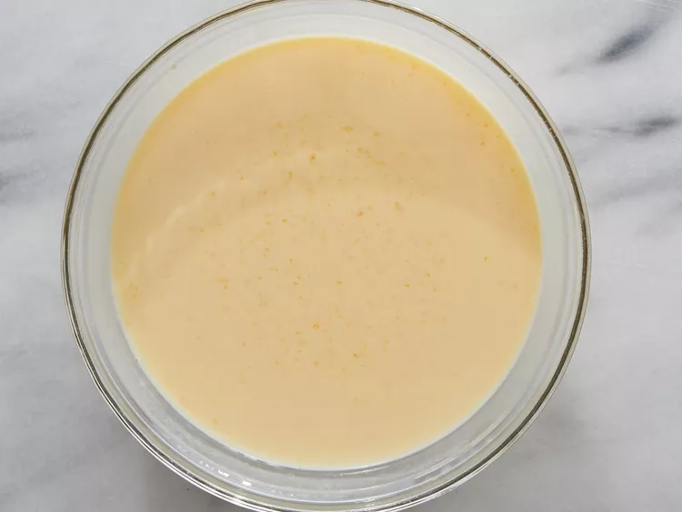

Homepage
Mac 'N Cheese

This crockpot mac and cheese is creamy, comforting, and takes just moments to assemble in a slow cooker. Great for large family gatherings and to take to potluck dinners. It's always a big hit!
Ingredients
- 1 (16 ounce) package elbow macaroni
- ½ cup butter
- salt and ground black pepper to taste
- 1 (16 ounce) package shredded Cheddar cheese, divided
- 1 (5 ounce) can evaporated milk
- 2 large eggs, well beaten
- 2 cups whole milk
- 1 (10.5 ounce) can condensed Cheddar cheese soup (such as Campbell's)
- 1 pinch paprika, or as desired (Optional)
How to Make It
Here's a detailed, step-by-step recipe on how to make this delicious dish!
- Step 1: Fill a large pot with lightly salted water and bring to a rolling boil. Stir in macaroni and return to a boil. Cook pasta uncovered, stirring occasionally, until tender yet firm to the bite, about 8 minutes. Drain and transfer pasta to a slow cooker.
- Step 2: Add butter to pasta and stir until melted; season with salt and pepper. Sprinkle about 1/2 of the Cheddar cheese over pasta and stir.
- Step 3: Whisk evaporated milk and eggs together in a bowl until smooth; stir into pasta mixture.
- Step 4: Whisk milk and condensed soup together in a bowl until smooth; stir into pasta mixture.

- Step 5: Sprinkle remaining cheese over pasta mixture; garnish with paprika.
- Step 6: Cook on Low for 3 hours, checking the edges are not getting too brown after 2 ½ hours.
- Step 7: Serve hot and enjoy!
Nutritional Facts
- 432 Calories
- 25g Fat
- 34g Carbs
- 18g Protein